← All collections
Collection
After dark
Dusk, blue hour and night: monuments, rivers and streets in the minutes when the city lights take over.
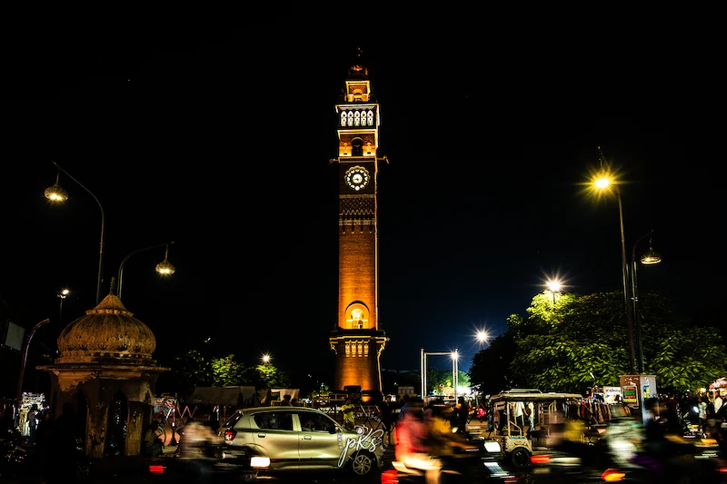
Clock Tower during the Rush Hour at NightLucknow, India, 2025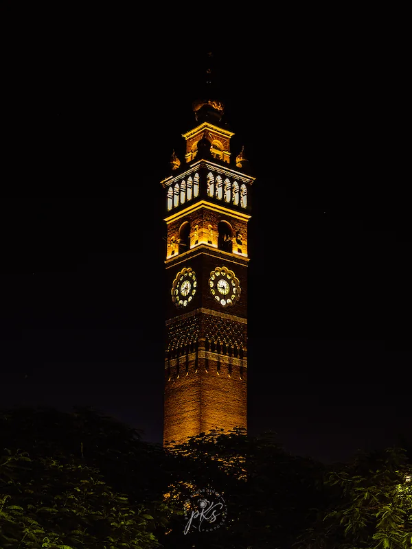
Clock Tower at NightLucknow, India, 2025 Rumi Darwaza at NightLucknow, India, 2025
Rumi Darwaza at NightLucknow, India, 2025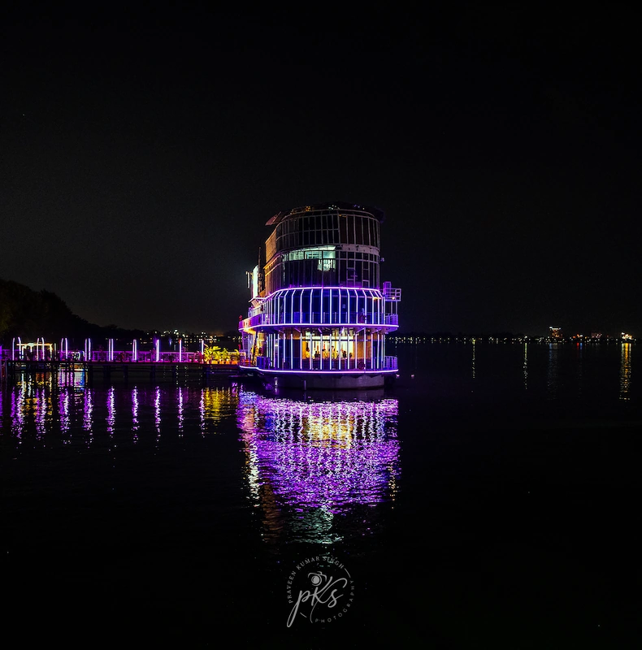
Illuminated Cruise Boat Reflected on the Lake at NightGorakhpur, India, 2025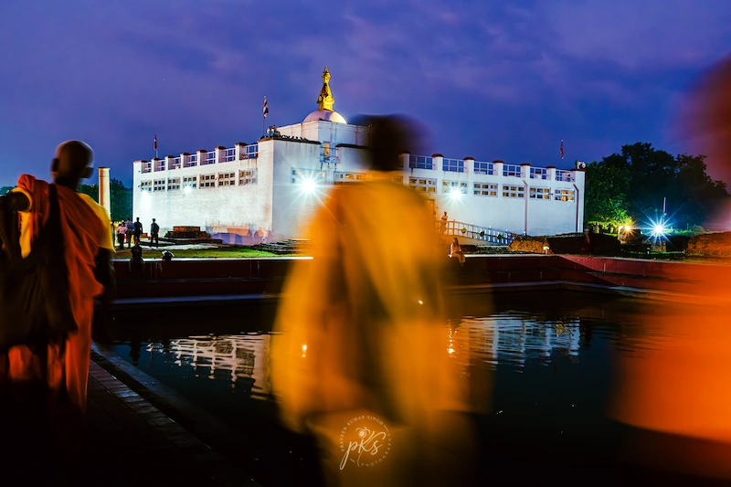
Sacred Night at Maya Devi Temple, LumbiniLumbini, Nepal, 2025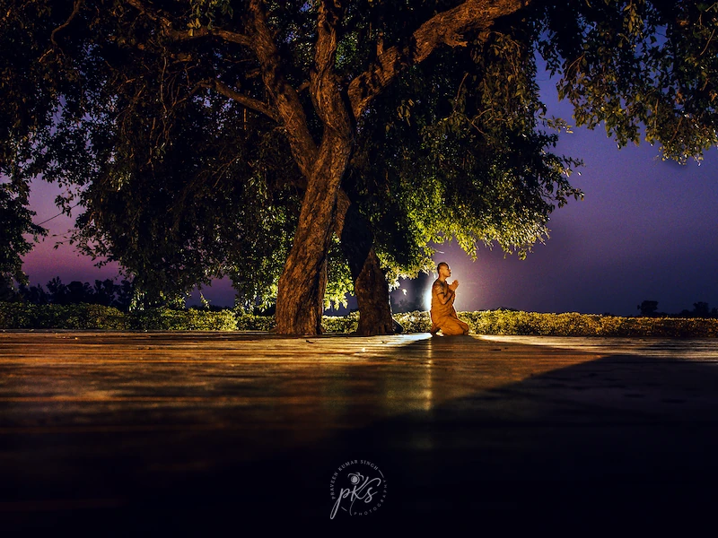
Meditating Monk Under a Sacred Tree at DuskLumbini, Nepal, 2025 Echoes at DuskHyderabad, India, 2025
Echoes at DuskHyderabad, India, 2025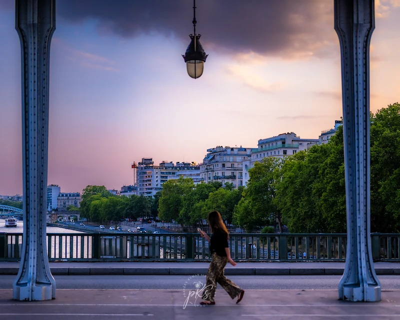
Twilight Walk on Pont de Bir-HakeimPont de Bir-Hakeim, Paris, France, 2026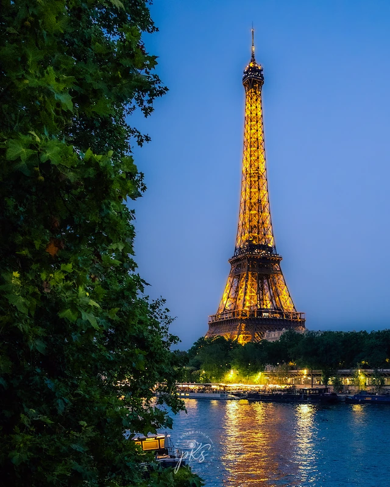
Eiffel Tower at Night7th Arrondissement, Paris, France, 2026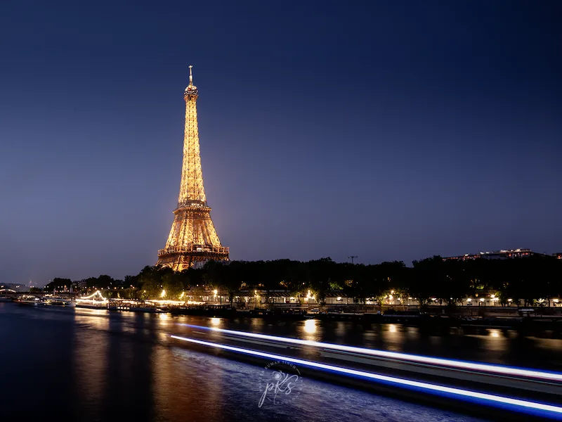
Long-Exposure Photography of Eiffel Tower at Night, Paris7th Arrondissement, Paris, France, 2026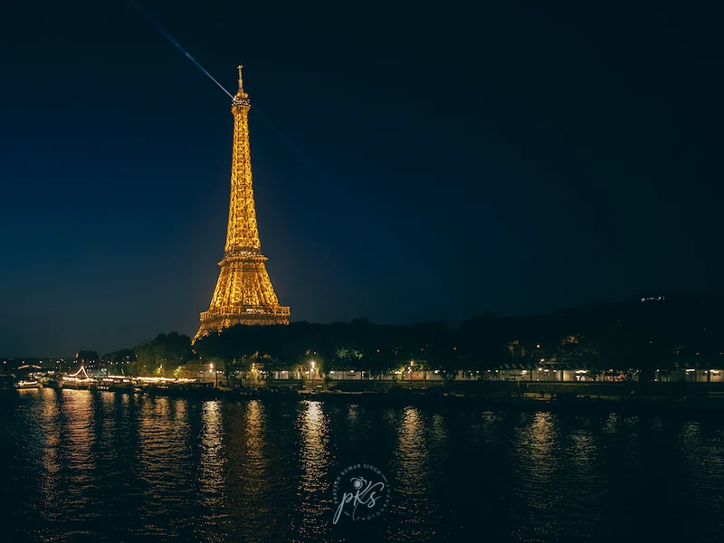
Eiffel Tower at Night, Paris7th Arrondissement, Paris, France, 2026 Sacré-Cœur Basilique from Rue de l'Abreuvoir at Night, ParisMontmartre, Paris, France, 2026
Sacré-Cœur Basilique from Rue de l'Abreuvoir at Night, ParisMontmartre, Paris, France, 2026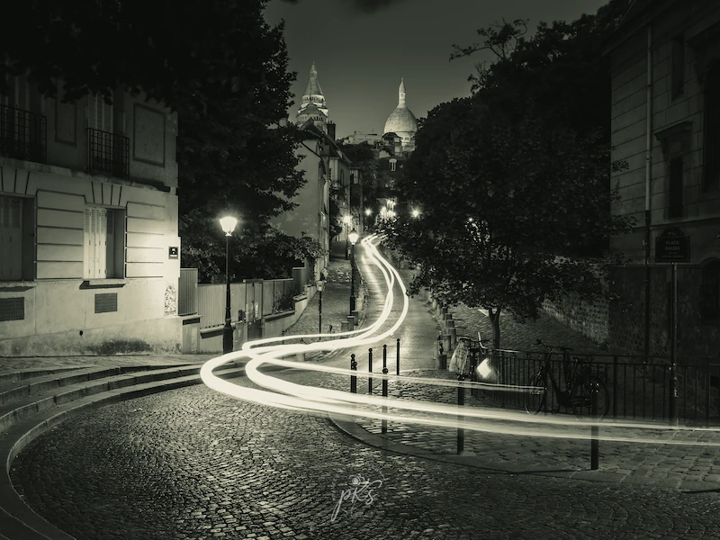
Sacré-Cœur Basilique from Rue de l'Abreuvoir at Night (BW), ParisMontmartre, Paris, France, 2026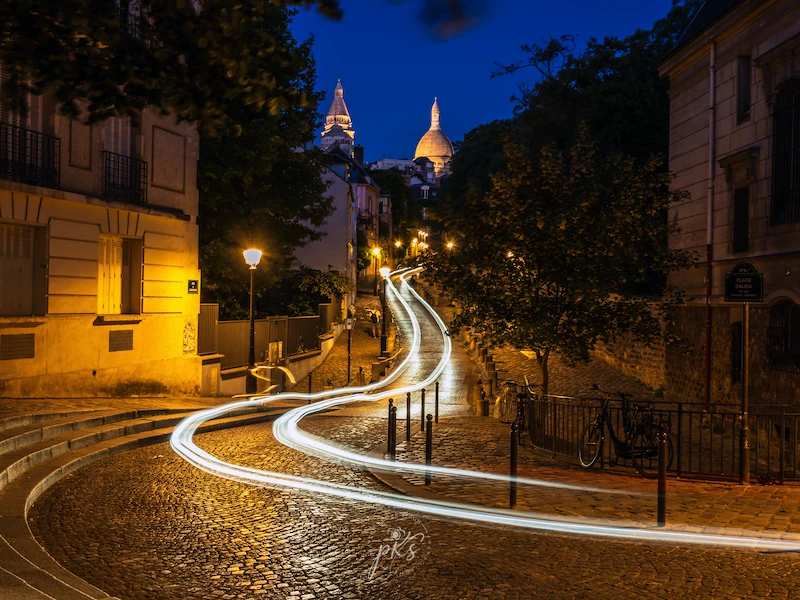
Light Trails Below Sacré-Cœur at NightMontmartre, Paris, France, 2026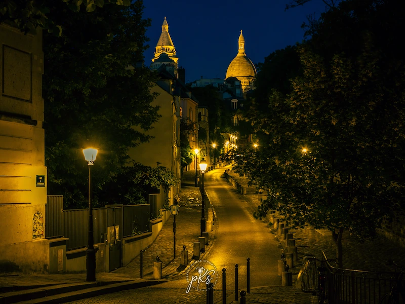
Montmartre NocturneMontmartre, Paris, France, 2026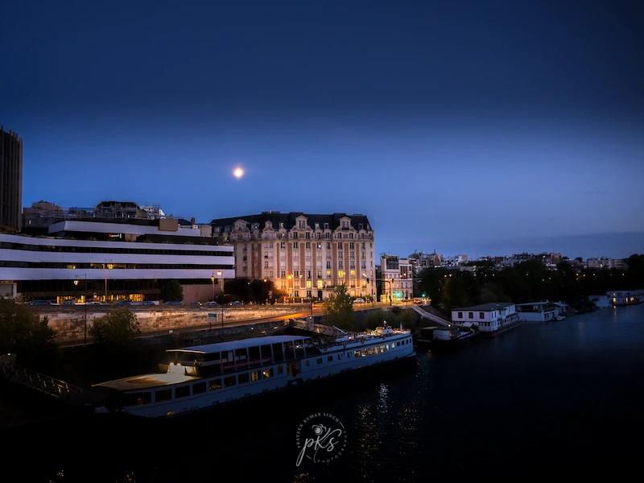
The River Seine and the MoonPont de Neuilly, Paris, France, 2026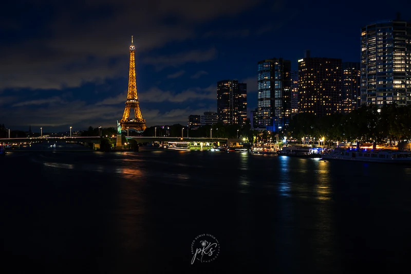
Reflections of Desire: Parisian Nights Between Water and Sky7th Arrondissement, Paris, France, 2026 Eiffel Tower glowing above the Seine7th Arrondissement, Paris, France, 2026
Eiffel Tower glowing above the Seine7th Arrondissement, Paris, France, 2026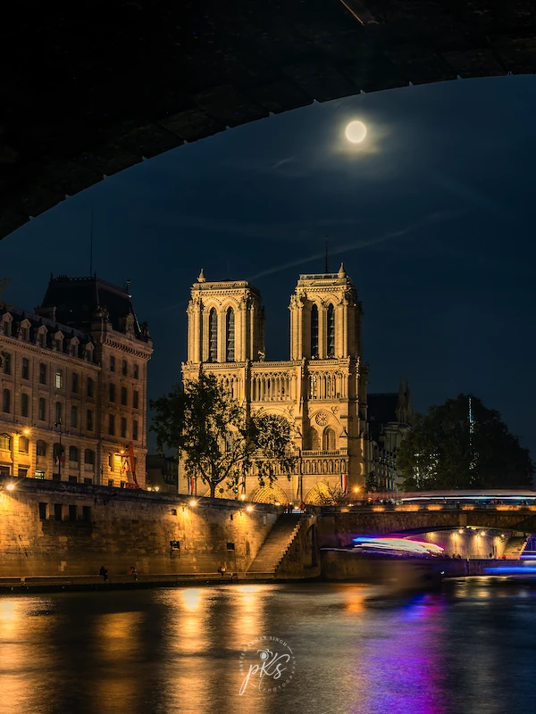
Notre-Dame de Paris glowing under the moon4th Arrondissement, Paris, France, 2026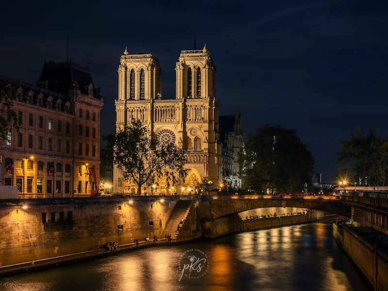
Illuminated Notre-Dame and Seine River Paris4th Arrondissement, Paris, France, 2026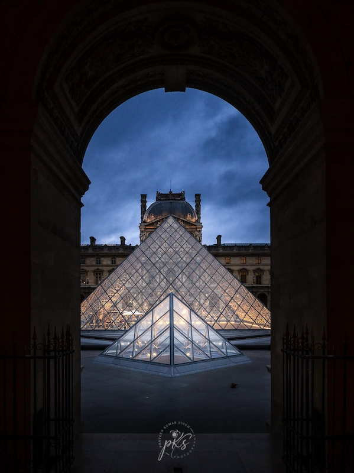
Louvre Pyramid at TwilightMusée du Louvre, Paris, France, 2026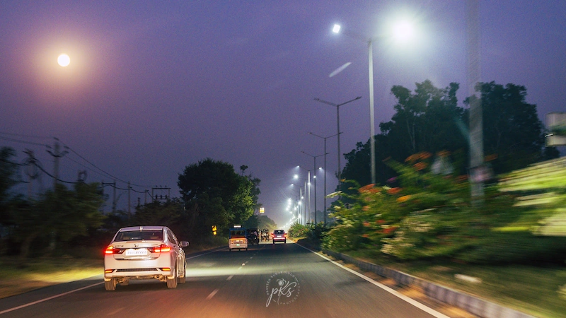
Streetlights on an Evening RoadAttari-Wagah border, Amritsar, India, 2025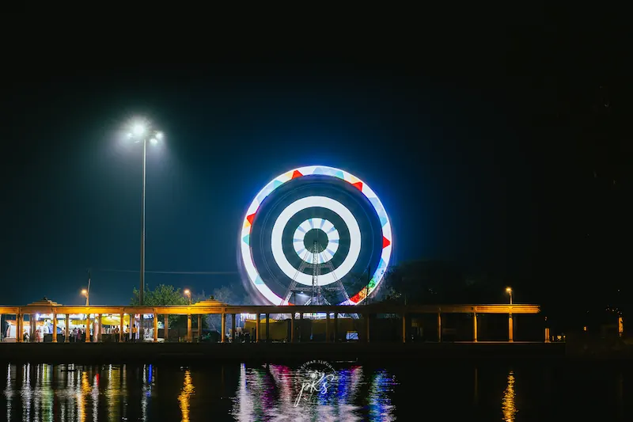
Ferris Wheel Lights at NightAmritsar, India, 2025